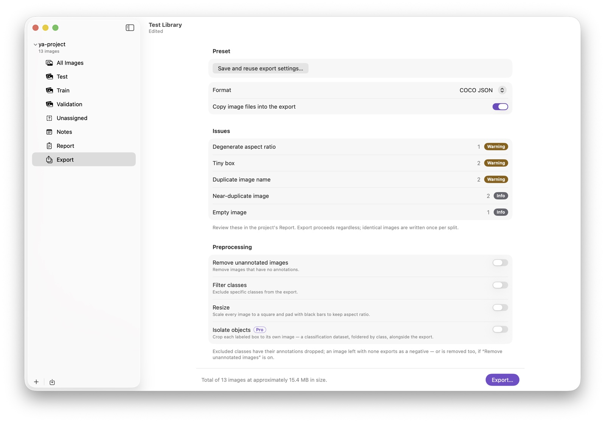

Import & export
Round-trip datasets in the formats your stack already uses, pull frames out of video, and shape what gets written on the way out.
Importing a dataset
Already have labeled images? Point yaAnnotator at the folder; the format is detected for you. There are two ways in:
- Import Dataset Split (⇧⌘I): adds one dataset folder to the project you have open. Its images are tagged with a split named after the folder, so a train or valid folder becomes a split you can filter by.
- Import Dataset (the + menu in the sidebar): for a folder whose subfolders are the splits. It creates a new project and brings in each subfolder as a split. If you pick the wrong one for the folder you chose, yaAnnotator points you to the other.
An import sheet opens first. It shows the detected format and, when the dataset has segmentations, lets you choose Import segmentations as pixel masks (on by default): leave it on to keep COCO RLE masks and multi-part polygons exact, or turn it off to trace a single outline of the largest piece instead. A one-part polygon always imports as a polygon.
Supported formats, detected automatically: COCO (boxes, polygons, and RLE masks), YOLO (with data.yaml splits), CreateML (boxes only), CVAT (boxes and polygons, label colors preserved), and Pascal VOC (boxes only). Images are matched by file name and referenced in place, labels are matched to yours by name, out-of-bounds boxes are pulled back inside, and files that aren't decodable images are rejected with the reason named.
Importing video frames (Pro)
File ▸ Import Video Frames… turns a stretch of video into images you can annotate. Pick any video, set the range and frames per second (the sheet shows the resulting frame count live, with a limit of 2,000 frames per pass, plus an honest size estimate and the destination's free space), then pick a destination folder. Frames are written as JPEGs and imported by reference, so keep the folder. A Longest side control (Original / 1920 / 1280 px) is the storage lever for 4K video.
Frame order matches time order, so Paste Annotations from Previous Image (⌥⌘V) carries labels from frame to frame while you adjust. Cancelling mid-extraction deletes everything written so far, and the report's duplicate check helps spot a frame rate set too high.
Exporting a dataset

Open the project's Export row in the sidebar (⌘E), pick a format, set options, then Export… and choose a destination. The dataset is written to a subfolder named after the project, and you're warned before replacing an existing one. By default an export references your images where they sit and writes only the labels; turn on Copy image files to write the images too (it switches on automatically whenever an option rewrites pixels). The footer sums up what you'll get, image counts, augmented copies, and estimated size, before anything is written.
Preprocessing
- Remove unannotated images: off by default, since unannotated images are valid negative samples.
- Remove unconfirmed empty images: a finer cut that keeps images you've explicitly marked null (∅) while dropping probable missing annotations.
- Pixel masks (PNG): also write a
masks/folder of per-image class-index PNGs rendered from your masks and polygons, ready-made semantic-segmentation ground truth. - Filter classes: uncheck a class to leave it out.
- Resize: scale every image to a square, padded to keep aspect ratio, at 320 to 1280 px or a custom size. Boxes and polygons move with the pixels.
- Isolate objects (Pro): crop each labeled box to its own image, foldered by class, a ready-made classification dataset alongside the detection export.
Augmentation (Pro)
Generate extra training copies with boxes and polygons transformed in lockstep with the pixels. Each option adds one copy per image at its slider value, with a live thumbnail preview: geometric (flips, rotations, crop), photometric (brighten, darken, exposure, saturation), and blur & noise (blur, motion blur, noise). Augmentation multiplies a few hundred labeled images into the thousands a robust detector needs, without online services or scripts.
Presets
Three built-in presets, Create ML Object Detection, YOLO Detection Training, and COCO Instance Segmentation, are one click to a training-ready configuration. With Pro you can also save your own: format, preprocessing, augmentation, and class selection under a name, shared across the library's projects.
What each format preserves
yaAnnotator never throws your work away silently. When a format can't hold a shape, the annotation exports as its bounding box, never dropped, and the export summary counts every one.
| Boxes | Polygons | Pixel masks | |
|---|---|---|---|
| COCO JSON | ✓ | ✓ | ✓ exact (RLE) |
| YOLO | ✓ | ✓ | box only |
| CVAT XML | ✓ | ✓ | box only |
| CreateML JSON | ✓ | box only | box only |
| Pascal VOC | ✓ | box only | box only |
| CSV | ✓ | box only | box only |
A COCO RLE mask imports bit-for-bit and exports bit-for-bit. Resize and augmentation move geometry an RLE mask can't follow, so under those options a mask keeps its correctly transformed box instead, and the summary reports the count. Format-native fields the app doesn't model (COCO info, licenses, iscrowd, custom keys) are preserved verbatim and re-emitted on a same-format export, and label colors round-trip through CVAT.